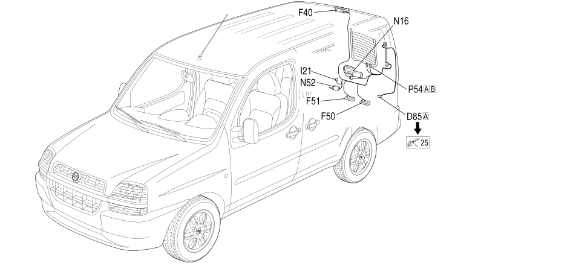

39 LEFT SWING DOOR
- Path
- Electrical equipment > 2 WIRING > 39 LEFT SWING DOOR
- Kind
- wiring harness
- Applies to
- engines: 1.2 8v, 1.6 16v, 1.3 JTD 16V, 1.9 JTD 8V, 1.9 DIESEL; all production periods; only with equipment: BIPOWER
- Interactive page
- https://sloeber94.github.io/elrnDB-fDbl/en/#/223003916
Applies to: engines: 1.2 8v, 1.6 16v, 1.3 JTD 16V, 1.9 JTD 8V, 1.9 DIESEL; all production periods; only with equipment: BIPOWER

Topics that link to this page (11)
- D085A TAILGATE REAR SEAL/ (LEFT SWING DOOR)
- F040 ADDITIONAL TAIL-LIGHT ('THIRD BRAKE LIGHT') (LEFT SWING DOOR)
- F050 LEFT NUMBER PLATE LIGHT (LEFT SWING DOOR)
- F051 RIGHT NUMBER PLATE LIGHT (LEFT SWING DOOR)
- I021 SWITCH ON REAR DOOR (LEFT SWING DOOR)
- N016 REAR WINDOW WIPER MOTOR (LEFT SWING DOOR)
- N052 REAR DOOR LOCK GEARED MOTOR (LEFT SWING DOOR)
- N55 LEFT REAR DOOR LOCK GEARED MOTOR ( LEFT SWING DOOR WIRING )
- P054A LEFT HEATED REAR WINDSCREEN (LEFT SWING DOOR)
- P054B LEFT HEATED REAR WINDSCREEN (LEFT SWING DOOR)
- P54 LEFT HEATED REAR WINDSCREEN ( LEFT SWING DOOR WIRING )